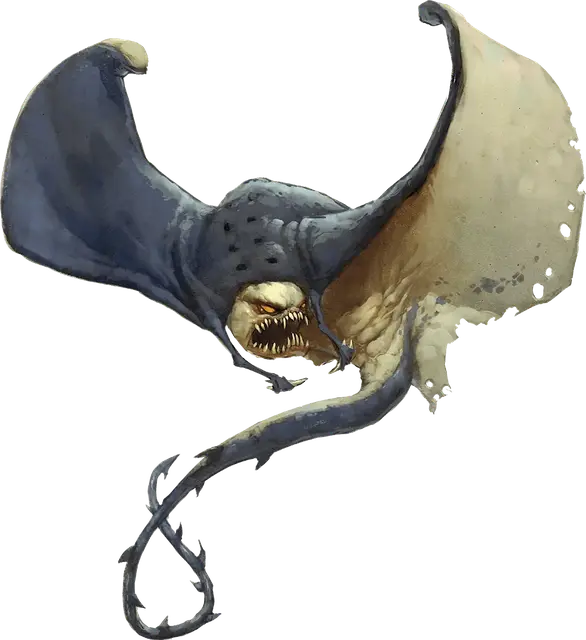

Плащевик
Cloaker
Большая Аберрация, хаотично-нейтральная

Класс Доспеха 14 (природный доспех)
Хиты 78 (12к10 + 12)
Скорость 10 футов, летая 40 футов
| мод | спас | ||
|---|---|---|---|
| СИЛ | 17 | +3 | +3 |
| ЛОВ | 15 | +2 | +2 |
| ТЕЛ | 12 | +1 | +1 |
| мод | спас | ||
|---|---|---|---|
| ИНТ | 13 | +1 | +1 |
| МДР | 12 | +1 | +1 |
| ХАР | 14 | +2 | +2 |
Навыки Скрытность +5
Чувства тёмное зрение 60 футов, пассивное Восприятие 11
Языки Глубинная речь, Подземный
Опасность 8 (3900 опыта)
Бонус мастерства +3
Среда обитания Подземье
Особенности
Передача урона. Пока плащевик прикреплен к существу, он получает только половину причиняемого ему урона (округляя в меньшую сторону), а оставшуюся половину получает существо.
Обманчивая внешность. Пока плащевик остается без движения, и его внутренняя сторона не видна, он неотличим от темного кожаного плаща.
Чувствительность к свету. Находясь на ярком свету, плащевик совершает с помехой броски атаки и проверки Мудрости (Восприятие), полагающиеся на зрение.
Действия
Мультиатака. Плащевик совершает две атаки: одну укусом, и одну хвостом.
Укус. Рукопашная атака оружием: +6 к попаданию, досягаемость 5 футов, одно существо. Попадание: Колющий урон 10 (2к6 + 3), и если размер цели не больше Большого, плащевик к ней прикрепляется. Если плащевик совершал бросок атаки с преимуществом, он прикрепляется к голове цели, которая становится ослепленной, и не может дышать, пока плащевик прикреплен к ней. Пока плащевик прикреплен, он может совершать эту атаку только по цели, и бросок атаки совершает с преимуществом. Плащевик может отцепиться сам, потратив 5 футов перемещения. Любое существо, включая цель, может действием оторвать плащевика, преуспев в проверке Силы Сл 16.
Хвост. Рукопашная атака оружием: +6 к попаданию, досягаемость 10 футов, одно существо. Попадание: Рубящий урон 7 (1к8 + 3).
Стон. Все существа в пределах 60 футов от плащевика, слышащие его стон, и не являющиеся аберрациями, должны преуспеть в спасброске Мудрости Сл 13, иначе станут испуганными до конца следующего хода плащевика. Если спасбросок существа был успешным, оно получает иммунитет к стону этого плащевика на следующие 24 часа.
Фантомы (перезаряжается после короткого или продолжительного отдыха). Плащевик магическим образом создает три свои иллюзорные копии, если не находится на ярком свету. Копии перемещаются вместе с ним и подражают его действиям, постоянно перемешиваясь, чтобы невозможно было понять, кто из них настоящий плащевик. Если плащевик окажется в области яркого света, копии исчезнут.
Каждый раз, когда какое-нибудь существо нацеливается на плащевика атакой или вредоносным заклинанием, пока есть копии, это существо случайным образом определяет, на плащевика или одну из копий он нацелился. Существо не попадает под действие этого магического эффекта, если оно не видит или полагается на другие чувства кроме зрения.
У копий КД и спасброски как у самого плащевика. Если атака попадает по копии, или копия проваливает спасбросок от эффекта, причиняющего урон, эта копия исчезает.
Описание
Плащевики получили свое название за сходство с темными кожаными плащами. Скрываясь в дальних уголках пещер и подземелий, эти скрытные хищники поджидают одинокую или раненую добычу, неосторожно забредшую во тьму.
Маскировка. Тело плащевика, как и тело ската, состоит из хрящей и мышц. Когда его крылья раскрыты, он летит сквозь тьму и скрывается среди теней, как скат скользит в воде и прячется на дне океана. Параллельные ряды круглых чёрных глазных пятен расположены на его спине подобно пуговицам, а когти цвета слоновой кости на его капюшоне похожи на костяные застежки.
Когда плащевик разворачивается и собирается напасть, он раскрывает свое уязвимое нутро, и его истинная природа становится очевидна. Красные глаза сверкают над рядами острых зубов, а позади вьется длинный хлещущий хвост.
Приспосабливающиеся хищники. Охотясь, плащевики скользят в тенях на безопасном расстоянии от групп других существ передвигающихся по Подземью. Они следуют за группами гуманоидов, чтобы охотиться на раненых после боя или следуют по пятам за скоплениями тварей Подземья, нападая на слабых, больных и отставших.
Плащевики нападают быстро и поглощают свою добычу как можно скорее, окутывая и пожирая свои жертвы. Во время кормежки, плащевик использует для обороны свой быстрый хлещущий хвост, хотя он редко противостоит опасным врагам или группам существ. В качестве дополнительной защиты плащевики могут создавать иллюзорных двойников самих себя.
Жуткие стоны. Мысли плащевиков чужды другим формам жизни, и они общаются друг с другом посредством инфразвуковых стонов, неразличимых для большинства существ. При высокой интенсивности стон становятся слышимым, вызывая ощущения страха и гибели у тех, кто его слышит.
Конклавы плащевиков. Плащевики предпочитают уединение, однако иногда они собираются для защиты или обмена информацией о новых опасностях, подходящих местах для охоты или событиях, которые могут повлиять на их среду обитания. Когда конклав закончен, плащевики снова разделяются.